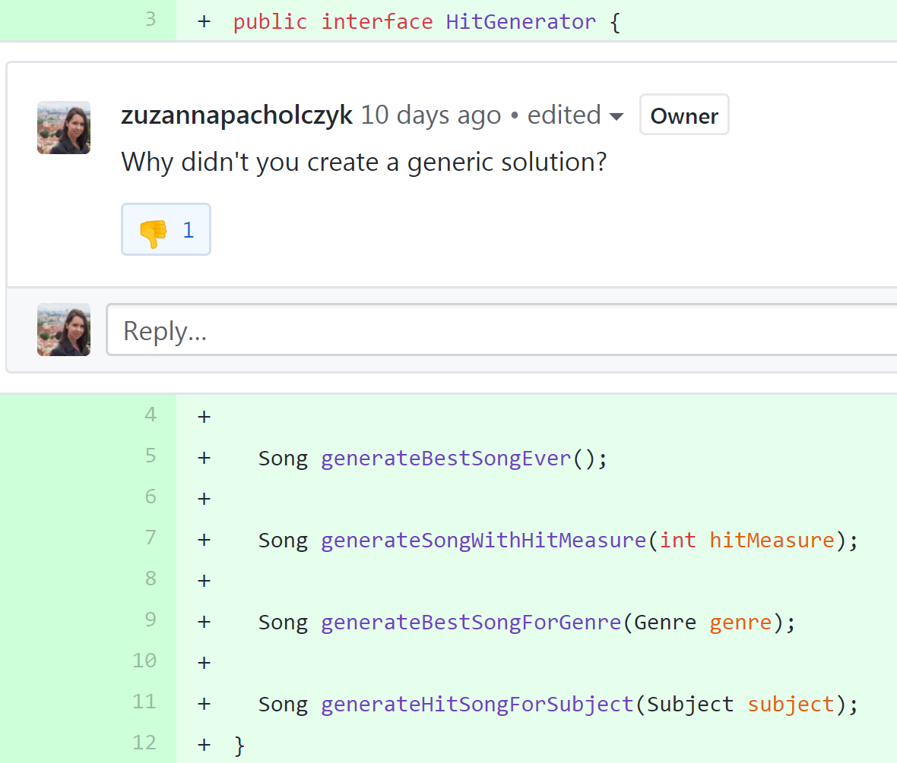
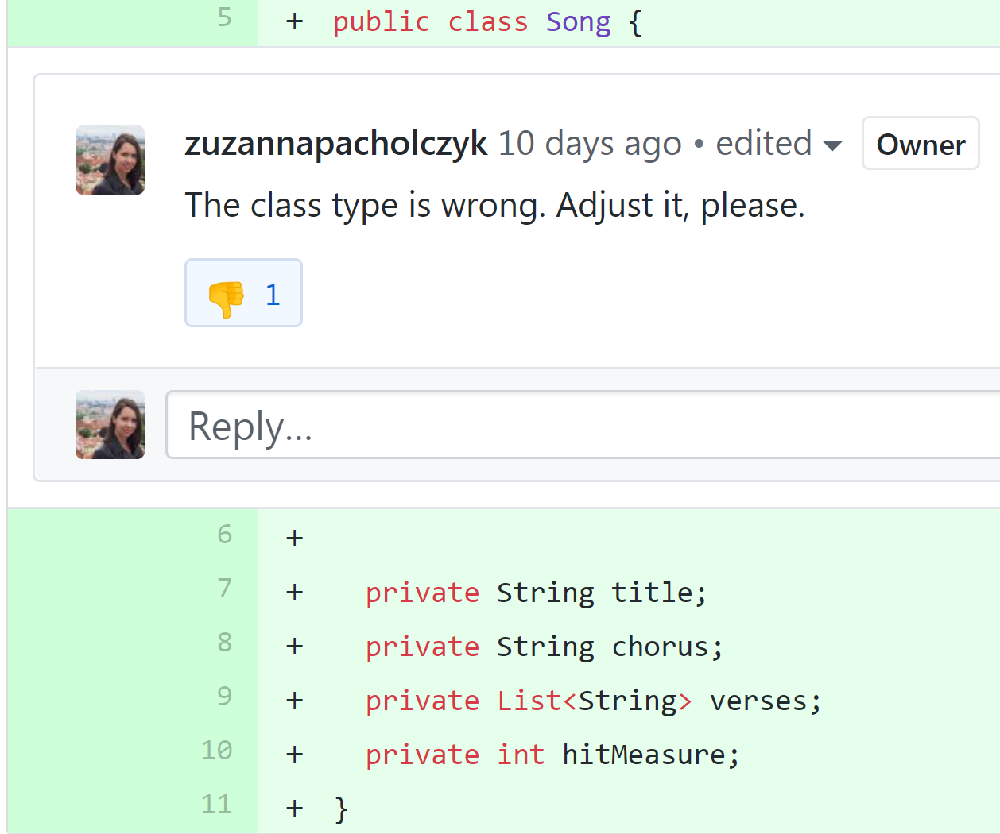
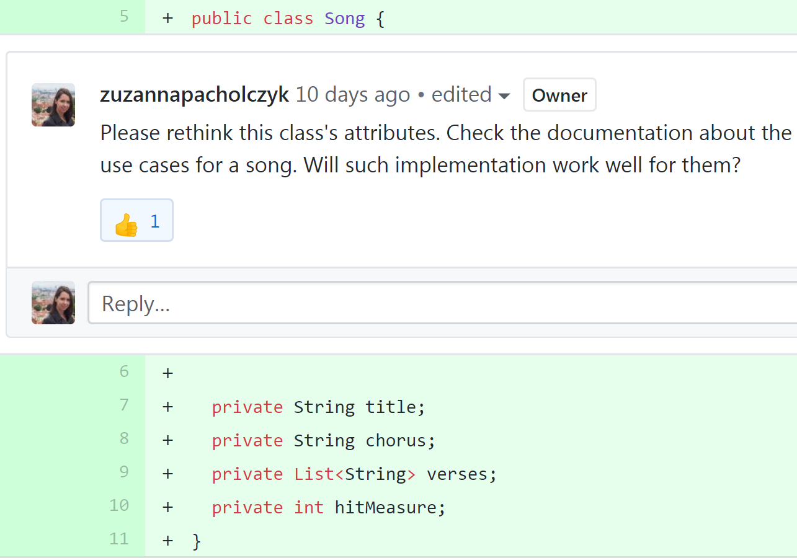
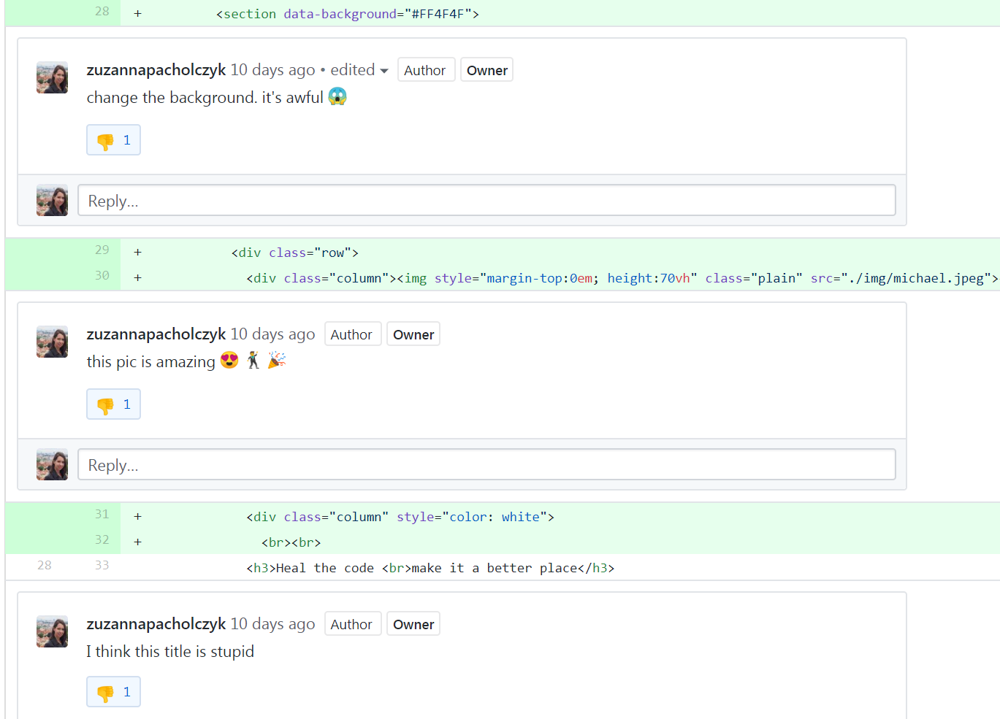
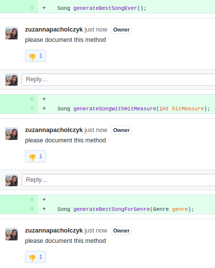
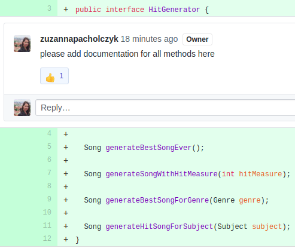
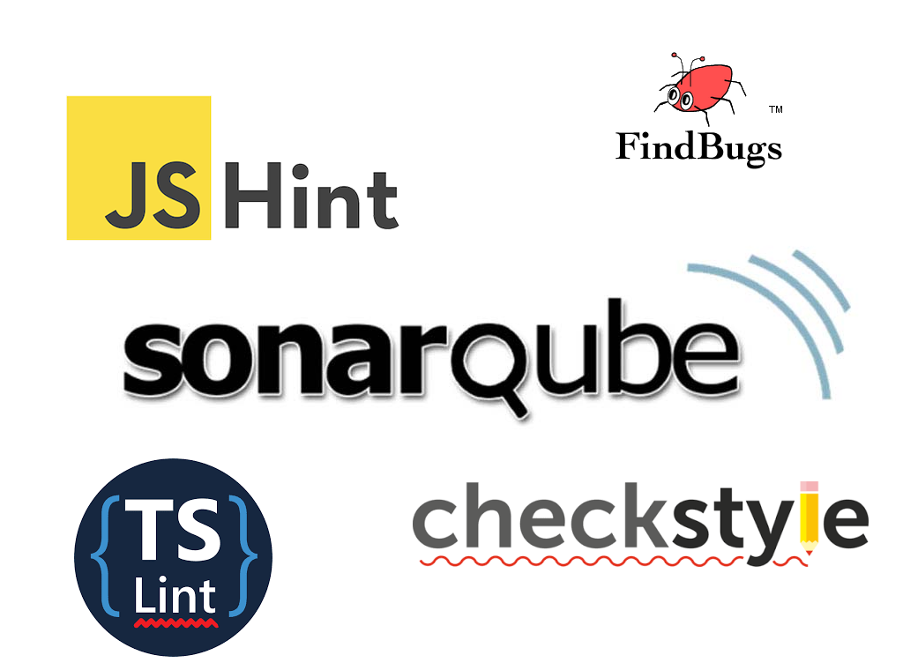
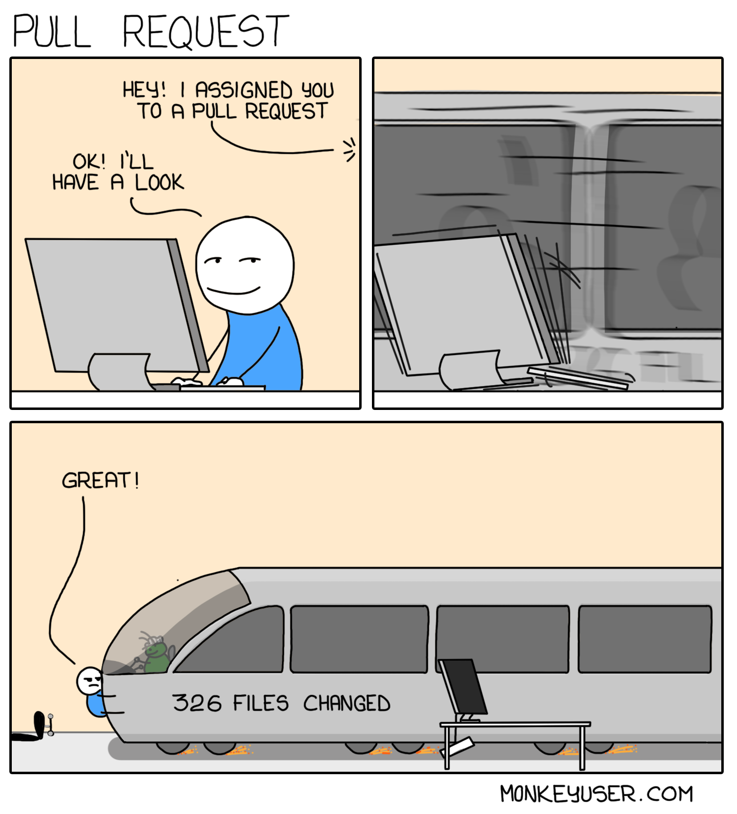

Thriller


Just good friends
This is it
“In software development, peer review is a type of software review in which a work product (document, code, or other) is examined by its author and one or more colleagues, in order to evaluate its technical content and quality. ”
— Wikipedia
This is it
“ The purpose of a peer review is to provide a disciplined engineering practice for detecting and correcting defects in software artifacts, and preventing their leakage into field operations.”
— Wikipedia
Code never felt so good
every teammate is involved
knowledge sharing for both sides win - win
getting familiar with different parts of a software
setting and sharing standards
regular work on technical debt
Somebody's watching me
Black or white
Bad
Problem
asking judgmental questions


Problem
sharing opinion as fact


Problem
asking for solving not your issue
While you are at it, there is also...

Problem
being unpolite

They don't care about us
Tip
write specific remark once


Tip
automate - let computers do the static analysis

Tip
keep the flow

Tip
appreciate good code
Tip
build dialog, be involved

Tip
talk offline
“The kinds of problems that take hours and tons of comments can usually be resolved in a few minutes of productive talk.”
— Tidy Java
You are not alone
Checklist
everybody creates
sets standards to code review process
smooth start for beginners
The way you make me feel
Give in to me
share the idea with your team
ask for a review
do the review better
as an architect, show a good example
you don't need a review? check it :)
Heal the code
Make it a better place
For you and for me
And for all your project mates
Sources
Unlearning toxic behaviors in a code review cultureHow to Do Code Reviews Like a Human (Part One)
How to Do Code Reviews Like a Human (Part Two)
A guide for reviewing code and having your code reviewed
Software peer review
OSEE/Software Development Process/Peer Review Checklist